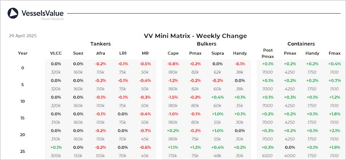

inWeekly Vessel Valuations Report30/04/2025

Bulkers:Bulker values have firmed for smaller tonnage this week mainly owing to recent deals such as River Pearl,El Comino and Nord Abidjan
Capesize Cape Acacia (206,200 DWT, Jul 2005, Imabari) sold to unknown Chinese for USD 22 mil, VV Value USD 19.92 mil
Kamsarmax BC Sea Plunto (81,000 DWT, Nov 2013, New Century) sold to undisclosed buyers for USD 16.5 mil, VV Value USD 16.57 mil
Ultramax BC El Comino (61,500 DWT, Aug 2012, Iwagi Zosen) sold to undisclosed buyers for USD 19.5 mil, VV Value USD 19.05 mil
Ultramax BC River Pearl (52,200 DWT, May 2008, Oshima) sold to undisclosed buyers for USD 12.25 mil, VV Value USD 11.79 mil
Handy BC Nord Abidjan (38,000 DWT, Jan 2020, Minami Nippon) sold SS/DD Passed to undisclosed buyers for USD 25.5 mil, VV Value USD 25.3 mil
Tankers:Tanker values have remained stable across the board over the last week as uncertainty remains
2 x VLCC Landbridge Glory & Landbridge Wisdom (307,900 DWT, 2019-2020, Dalian Shipbuilding Industry Corp) sold in an en bloc deal to Asyad Shipping for USD 205 mil, VV Value USD 204.62 mil
Aframax Jinjiang Experience (112,900 DWT, Nov 2009, New Times Shipbuilding) sold SS/DD Passed to undisclosed buyers for USD 33.5 mil, VV Value USD 32.6 mil
MR2 MD Miranda (46,400 DWT, Oct 1999, Daedong) sold SS/DD Passed to undisclosed buyers for USD 8.3 mil, VV Value USD 7.19 mil
Containers:Values remained fairly stable last week, older Feedermaxes are up based on recent sales
Handy Container Xin Xin Shan (1,688 TEU, Feb 2007, Wadan Yards MTW) sold to MSC for USD 15.75 mil, VV Value USD 15.3 mil.
Feedermax Contship Win (1,118 TEU, Feb 2008, Qingshan Shipyard) sold DD Passed to undisclosed buyers for USD 10.2 mil, VV Value USD 9.1 mil.
